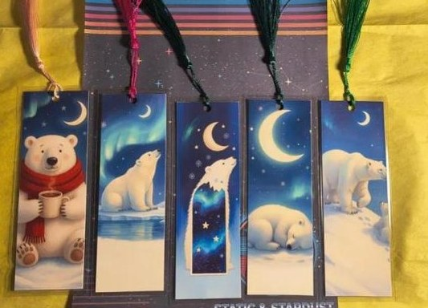

Static & Stardust began with a love of making things and making people happy. The name goes a little deeper: radio static is existence itself, the quiet hum that’s always been there beneath everything. Stardust is the possibility that can make anything one can dream.
From El Paso, we turn those dreams into bookmarks, coasters and charm necklaces made to brighten someone’s day. Thanks for stopping by — we hope something here makes you smile.
Visit the shop →